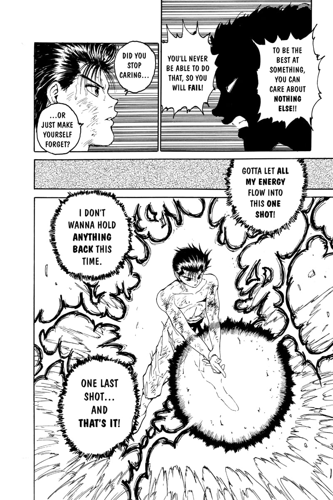
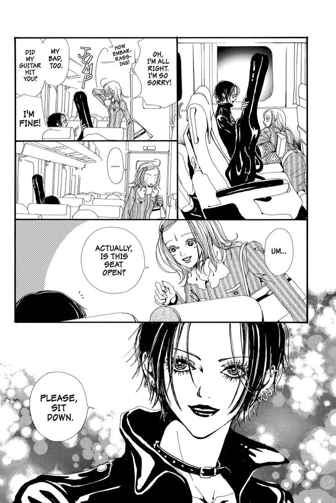
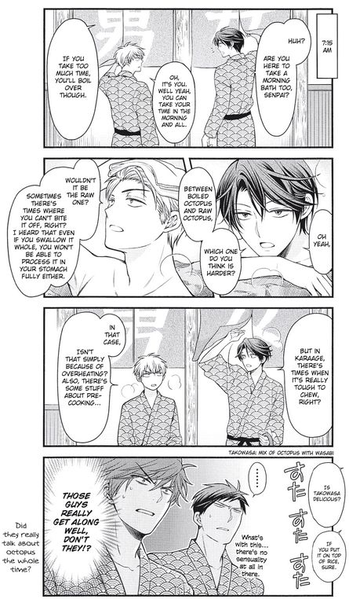
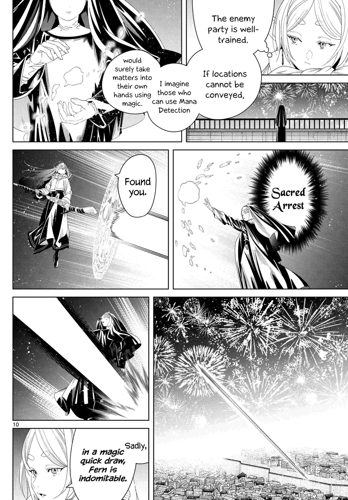

Manga has spanned a large variety of genres across the decades, reflecting the tastes of readers and the times they were published in.
Let's take a look at the ways its makeup has changed over time.
Hover over charts to learn more about specific data points.
In the year 1990, comedy, drama and action dominated the scene. This reflects the saturday-morning-cartoon origins of the genre, aimed more towards younger kids than adults.
One notable example is Yu Yu Hakusho, a comedy, drama and action manga that began serialization in Shounen Jump (a manga magazine aimed towards young boys) in November 1990.

As the years progressed, romance and drama both became more popular, as did shoujo (manga targeted at young girls), reflecting a more diverse audience.
A notable example of shoujo romance from this time is Nana, a romance drama shoujo originally published starting in May 2000.

Nana had undertones of same-sex romance, which precluded the trend of LGBTQ romance genres such as Boys' Love becoming more popular.
Shoujo and romance continued to dominate throughout the early 2000s, and rom-coms combining the two top genres of romance and comedy were especially popular during this time.

A notable romcom from this era is Gekkan Shoujo Nozaki-kun, which started its publication in August of 2011.
Fantasy started climbing the charts in 2015...
...replacing romance to become the most popular genre for newly published manga in 2020.

Frieren is the most famous example of a 2020 adventure manga, starting serialization in April of that year.
As shown prior, romance, comedy, fantasy and action have tended to dominate when it comes to new publications.
Despite that, they end up middling in terms of average score, perhaps due to oversaturation of the genre.
However, average ratings from readers in recent decades have improved and stabilized from the early days of manga!
This may be due to the quantity of newly published manga creating a smoother average that hovers around 7.00, as early years have limited data due to ratings being taken from MyAnimeList, an online database launched in 2004. These ratings are all compiled by western English-speaking audiences as well, many of whom did not have access to early manga via official channels until the 1990s-2000s.
Early fluctuations are due to legacy titles with ties to more modern titles having ratings from fans revisiting in retrospect. Those legacy titles are among the only to be ranked during their year of publication, weighting the average for that year heavily.
For example, the deep valley in 1959 is due to the manga Castle of Dawn, penned by the famous manga author Osamu Tezuka, often considered the "Father of Manga". Castle of Dawn received only 6.38 from MyAnimeList users.
Recency bias plays a role in the spike in 2023.
Viewing a distribution of scores across publishing years supports this, as recent years show a larger range of scores amongst publications, which may have balanced fluctuations in average scores per year overall. In addition, more manga is recorded and rated post-2000, reflecting the increase in access to and discussion of manga by western audiences after 2000, along with user tendency to not record ratings in retrospect for older titles after MyAnimeList's launch.
Despite fluctuations in data, the larger range of titles and stabilization of score indicates the overall growth of the manga industry in both the west and in general, as more manga authors are given greenlights to pursue their series and explore new ideas. More diverse titles and tastes can only mean good things for a creative industry.
Data for this visualization was sourced from Kaggle.